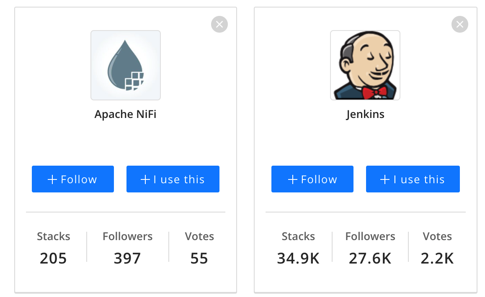
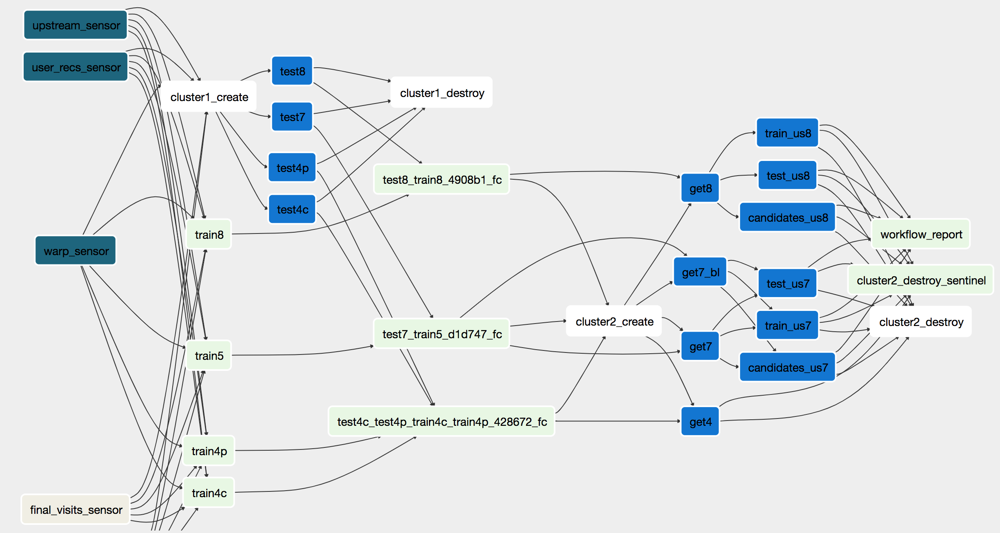

Jenkins vs Apache Airflow for ETL Jobs
Created by Andrii Malaman
Andrii Malaman
- Software/Data Engineer
- Python, Scala, Golang, JS, Java
- https://github.com/malaman
What is ETL Pipeline?
Questions to answer ?
- Automatic start (schedule)
- Dependency between jobs
- Monitoring
- Restart after failure
Historical solution: CRON!
CRON
- Automatic start (schedule) ✅
- Dependency between jobs üö´
- Monitoring üö´
- Restart after failure ⚠️
Popularity (stackshare.io)
Comparison params
- Easy to setup
- Easy to use
- Dependency between jobs
- Monitoring
- Restart after failure
Easy to setup: Jenkins
Easy to setup: Airflow
Dependency between jobs: Jenkins
Dependency between jobs: Airflow
| Tool | Setup | Usage | Dependencies | Mon. | Recovery |
|---|---|---|---|---|---|
| Jenkins | ✅ | ⚠️ | ⚠️ | ✅ | ⚠️ |
| Airflow | üö´ | ✅ | ✅ | ✅ | ✅ |
Summary
- Jenkins is good for small ETL Pipelines
- Airflow is good for complex ETL Pipelines
- Airflow has a number of build-in ETL operators
 https://malaman.github.io/talks/2021-jenkins-vs-airflow-for-etl-jobs
https://malaman.github.io/talks/2021-jenkins-vs-airflow-for-etl-jobs